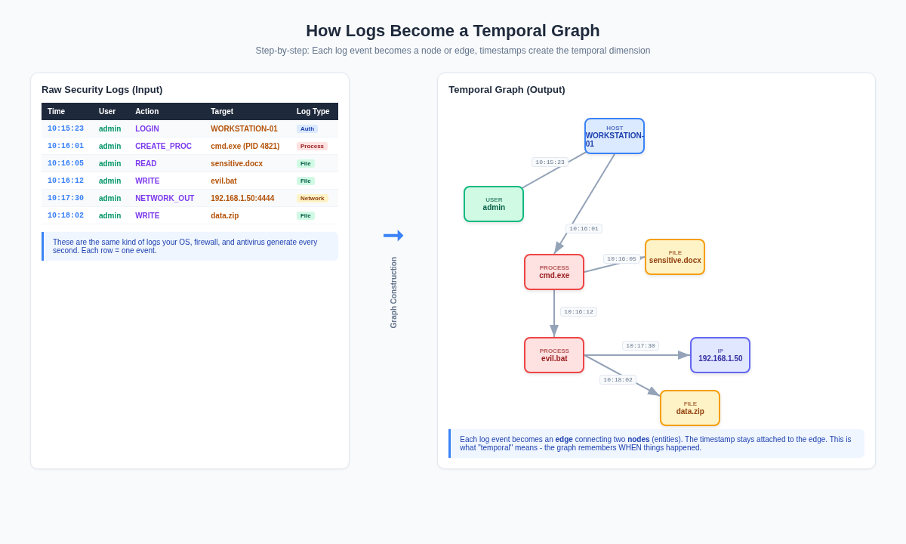
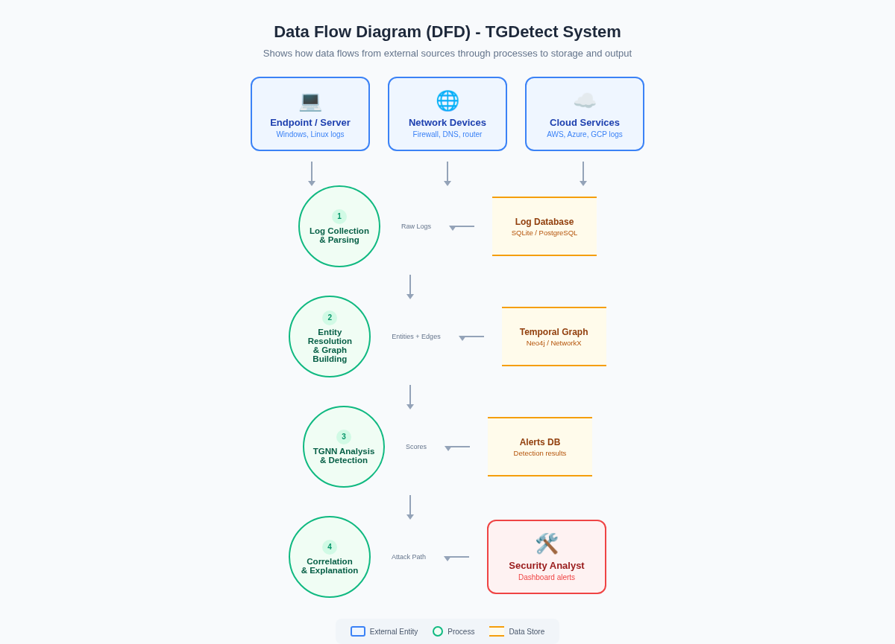
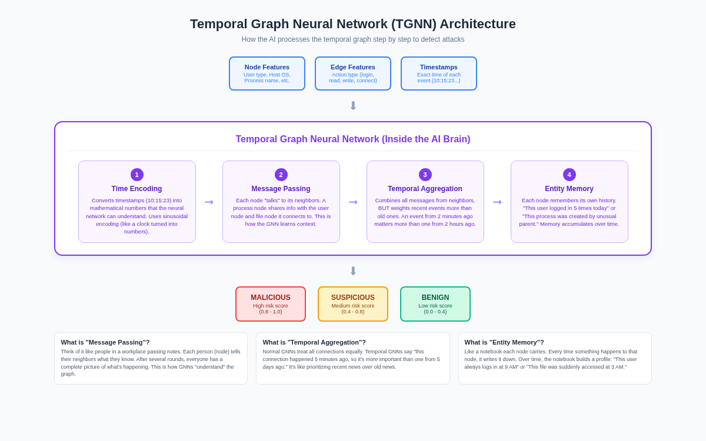
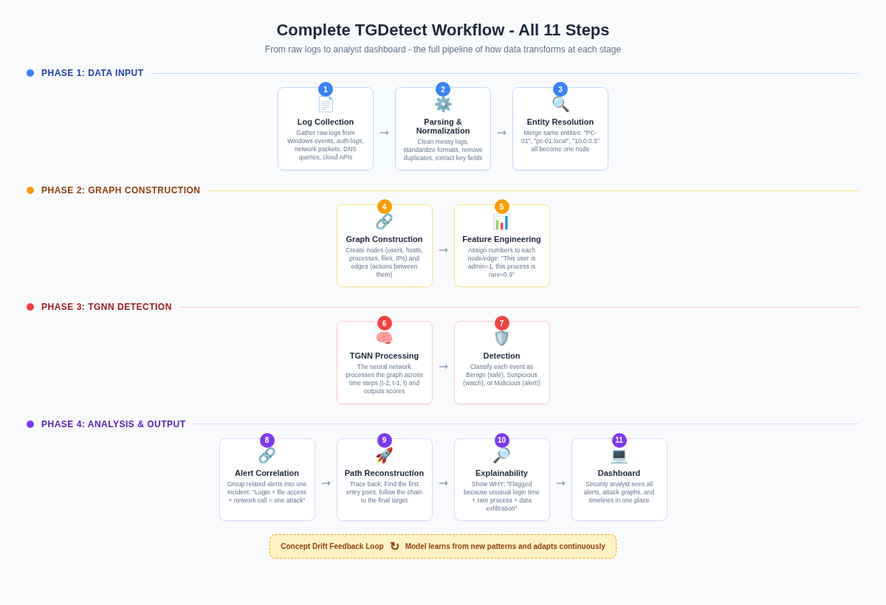
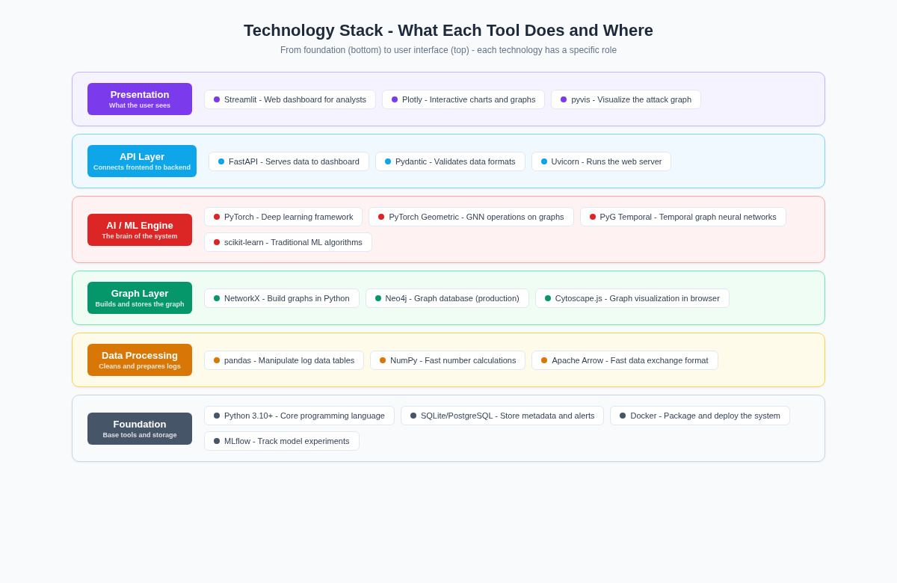

Chapter 1
The Problem: Why Current Systems Fail
Imagine you are a security guard monitoring a large office building with hundreds of cameras. Each camera records what happens in its area independently. Camera 1 sees someone enter the lobby. Camera 2 sees someone open a door. Camera 3 sees someone access a computer. Now here is the critical question: How do you know these three events are done by the SAME person, as part of the SAME attack plan?
This is exactly the problem in cybersecurity today. Modern security systems generate thousands of log entries every second: authentication logs (who logged in), process logs (what programs ran), network logs (where data was sent), file logs (what files were accessed), DNS logs (what websites were contacted). Each of these log types is collected and analyzed separately, like cameras that cannot talk to each other.
An Advanced Persistent Threat (APT) is a multi-step cyberattack where the hacker performs a sequence of small, individually harmless-looking actions over hours or days. First they log in with stolen credentials. Then they run a small script. Then they access a sensitive file. Then they send data to an external server. Each single action looks normal on its own. It is only when you connect ALL these actions together and see the SEQUENCE that you realize it is an attack.
Current systems fail because: (1) They look at each log event in isolation, not as a connected chain. (2) They ignore the timing and sequence of events. (3) They generate fragmented alerts instead of a complete attack picture. (4) They cannot explain WHY something is suspicious. TGDetect solves all of these problems by modeling security events as a temporal graph and using AI to detect attack patterns.
Simple Analogy
Think of a detective investigating a crime. Each log entry is like a single clue: a fingerprint on a doorknob, a broken window, a stolen wallet. Individual clues mean nothing. But when the detective puts ALL the clues on a corkboard and draws lines between them with timestamps, a story emerges. TGDetect is that detective - it connects the dots.
Chapter 2
What Are Security Logs?
Before understanding the project, you need to understand what "logs" are. Every action that happens on a computer, server, or network is recorded as a text entry called a "log." It is like a diary that the computer writes automatically. When a user logs in, a log entry is created. When a program runs, a log entry is created. When data is sent over the network, a log entry is created. Here are the five types of logs that TGDetect uses:
| Log Type | What It Records | Example Entry | Used By TGDetect? |
|---|---|---|---|
| Authentication Logs | Who logged in, when, from where, success or failure | "admin logged into WORKSTATION-01 at 10:15 AM" | Yes - creates USER and HOST nodes |
| System Audit Logs | What processes ran, what files were created/read/deleted | "cmd.exe (PID 4821) was spawned by explorer.exe" | Yes - creates PROCESS and FILE nodes |
| Network Flow Logs | Which computers talked to which, how much data, on what port | "WORKSTATION-01 sent 4.2MB to 192.168.1.50 on port 4444" | Yes - creates IP nodes and network edges |
| DNS Query Logs | What domain names were looked up (e.g., malicious-c2-server.com) | "Query for updates.malware-domain.xyz at 10:17 AM" | Yes - creates DNS/IP edges |
| Cloud Service Logs | API calls, resource creation, access patterns in AWS/Azure | "New S3 bucket 'stolen-data' created by user admin" | Yes - creates cloud entity nodes |
Each log entry has at minimum three things: (1) a timestamp (when it happened), (2) an actor (who or what did it), and (3) an action (what happened). These three pieces are exactly what we need to build a graph. The actor becomes a node, the action becomes an edge, and the timestamp makes it "temporal" (time-aware).
Chapter 3
What Are Graphs and Why Use Them?
A "graph" in computer science is NOT a bar chart or pie chart. It is a structure made of nodes (also called vertices) connected by edges (also called links). Think of it like a social network: each person is a node, and each friendship connection is an edge. In TGDetect, each "entity" (user, computer, process, file, IP address) becomes a node, and each "action" (login, read, write, connect) becomes an edge between two nodes.
The key reason graphs are powerful for cybersecurity is that attacks are inherently graph-shaped. A hacker does not just do one thing to one target. They follow a path: log into a computer (User -> Host), run a command (Host -> Process), read a file (Process -> File), send data out (Process -> IP). This chain of connected actions IS a graph. Traditional systems that look at log entries in a flat table cannot see this chain. Graph-based systems can.
Graph Analogy
Imagine a road map. Cities are nodes, roads are edges. If you want to track a delivery truck from warehouse to customer, you follow the roads (edges) through the cities (nodes). In TGDetect, the "truck" is the attack, the "cities" are the entities, and the "roads" are the actions. The timestamps are like timestamps on a delivery receipt - they tell you WHEN each leg of the journey happened.
Chapter 4
How Logs Become a Temporal Graph
This is one of the most important concepts to understand. The diagram below shows exactly how TGDetect transforms raw security logs into a temporal graph. On the left side, you see a table of raw log entries - this is what comes directly from the operating system and network devices. On the right side, you see the resulting graph. Here is the step-by-step process:
1Extract Entities (Nodes): From each log entry, identify the entities mentioned. "admin" becomes a USER node. "WORKSTATION-01" becomes a HOST node. "cmd.exe" becomes a PROCESS node. "sensitive.docx" becomes a FILE node. "192.168.1.50" becomes an IP node. Each unique entity gets exactly one node in the graph.
2Create Edges (Connections): Each log entry describes an action between two entities. "admin logged into WORKSTATION-01" creates an edge from the admin node to the WORKSTATION-01 node. The type of action (LOGIN, READ, WRITE, NETWORK_OUT) is stored as a label on the edge.
3Attach Timestamps: This is the "temporal" part. Every edge carries the exact timestamp from the log entry. "admin -> WORKSTATION-01" has timestamp 10:15:23. "WORKSTATION-01 -> cmd.exe" has timestamp 10:16:01. This means the graph is not just a static picture - it is a time-sequenced story of what happened.
4Entity Resolution (Deduplication): The same entity may appear under different names. "PC-01", "pc-01.local", and "10.0.0.5" might all be the same computer. TGDetect resolves these into a single canonical node so the graph accurately represents reality.

Figure 1: Raw security logs (left) are transformed into a temporal graph (right). Each entity becomes a node, each action becomes a timestamped edge.
The resulting graph captures something that a flat table of logs never could: relationships and sequence. You can see that admin logged in, then created a process, then read a file, then wrote a file, then made a network connection, then wrote another file. The graph makes the attack chain VISIBLE.
Chapter 5
System Data Flow (DFD)
A Data Flow Diagram (DFD) shows how data enters the system, what processes it goes through, where it gets stored, and what comes out. In the diagram below, the rounded rectangles on the left are external entities (sources of logs). The circles are processes (what TGDetect does to the data). The open rectangles are data stores (where data is saved). And the rectangle on the right is the external output - the security analyst who receives the results.

Figure 2: Data Flow Diagram showing how raw logs flow through 4 processes and 3 databases to reach the security analyst.
Here is the simple flow in plain English: Computers and network devices generate logs -> Process 1 collects and parses these logs and saves them in a database -> Process 2 resolves entities and builds the temporal graph, saved in Neo4j -> Process 3 runs the TGNN AI model on the graph to detect anomalies -> Process 4 correlates alerts and generates explanations -> The security analyst sees the results on a dashboard.
Chapter 6
How the TGNN Works (The AI Brain)
This is the core of the project - the Temporal Graph Neural Network. Let us break down each word: Temporal = time-aware, Graph = operates on a graph structure (nodes and edges), Neural Network = an AI model that learns patterns from data. So a TGNN is an AI that learns patterns from time-stamped graph data. The diagram below shows the internal architecture of the TGNN:

Figure 3: Inside the TGNN - Time Encoding, Message Passing, Temporal Aggregation, and Entity Memory work together to classify events.
Step 1: Time Encoding
Neural networks cannot understand timestamps like "10:15:23" directly. They only understand numbers. So the first step converts timestamps into mathematical representations using sinusoidal encoding (think of it as converting clock time into a wave pattern). This is similar to how a sine wave can represent the position of a clock hand. The AI can now process "when" something happened as a number it can do math with.
Step 2: Message Passing
This is the heart of how any Graph Neural Network works. Each node "sends a message" to its neighboring nodes. For example, the cmd.exe node tells the admin node: "I was created by this user." The admin node tells the WORKSTATION-01 node: "I logged into this computer." After several rounds of message passing, every node has accumulated information from its entire neighborhood. This is how the GNN builds "context" - it understands not just what each node IS, but what is happening AROUND it.
Step 3: Temporal Aggregation
When a node receives messages from multiple neighbors, it needs to combine them. In a regular GNN, all neighbors are treated equally. But in a Temporal GNN, the model weights recent messages more heavily than old ones. An event that happened 2 minutes ago is more relevant than one that happened 2 days ago. This is like how you care more about today's news than last week's news. The mathematical function that does this weighting is called temporal attention.
Step 4: Entity Memory
Each node maintains a "memory" that accumulates over time. The first time admin logs in, the memory is empty. After 5 logins, the memory says "this user logs in frequently." If suddenly admin logs in at 3 AM from an unusual location, the memory flags this as abnormal because it does not match the established pattern. This is what enables concept drift adaptation - the model continuously updates its understanding of "normal" behavior as new data comes in.
Output: Classification
After all four steps, the TGNN outputs a risk score for each node and edge. Scores between 0.0-0.4 are classified as Benign (normal, safe), scores between 0.4-0.8 are Suspicious (needs investigation), and scores 0.8-1.0 are Malicious (high-confidence attack). These classifications feed into the alert system.
TGNN Analogy
Think of the TGNN like a team of investigators. Time Encoding is the translator who converts "10:15 AM" into a format the team understands. Message Passing is investigators sharing what they know with each other. Temporal Aggregation is the lead investigator who prioritizes recent intel over old intel. Entity Memory is each investigator's notebook where they jot down patterns over time. Together, they decide: "Is this suspicious?"
Chapter 7
Complete 11-Step Workflow
Now let us look at the complete end-to-end pipeline. The diagram below shows all 11 steps organized into 4 phases. Data enters from the left (log sources), gets processed through the middle (graph building and AI), and comes out on the right (analyst dashboard). Each step transforms the data further:

Figure 4: The complete TGDetect pipeline - from raw logs (Step 1) through graph construction, TGNN detection, and analysis to the analyst dashboard (Step 11).
Phase 1 (Steps 1-3): Data Input. Raw logs are collected from five different sources (Windows events, authentication systems, network devices, DNS servers, cloud APIs). These logs are in different formats - some are JSON, some are plain text, some are Syslog format. Step 2 (Parsing) standardizes everything into one format. Step 3 (Entity Resolution) merges duplicate entities so "PC-01" and "pc-01.company.local" become one node.
Phase 2 (Steps 4-5): Graph Construction. Step 4 creates the actual graph - nodes for every entity, edges for every action, timestamps on every edge. Step 5 (Feature Engineering) converts text labels into numerical features. "This user is an admin" becomes a number like 1.0. "This process was spawned by an unusual parent" becomes a score like 0.85. These numbers are what the neural network actually processes.
Phase 3 (Steps 6-7): TGNN Detection. Step 6 feeds the graph into the TGNN model, which processes it across three time steps (t-2, t-1, t). This means the model looks at how the graph changed over time, not just a single snapshot. Step 7 classifies each event as Benign, Suspicious, or Malicious based on the TGNN's output scores.
Phase 4 (Steps 8-11): Analysis and Output. Step 8 groups related alerts into a single incident (instead of flooding the analyst with 50 individual alerts, it says "these 50 events are all part of one attack"). Step 9 traces back through the graph to reconstruct the complete attack path from first compromise to final target. Step 10 generates a human-readable explanation of WHY the attack was flagged. Step 11 displays everything on the Streamlit dashboard.
Concept Drift Feedback Loop: Notice the loop arrow at the bottom of the workflow diagram. As new logs come in and new attacks are detected, the model continuously updates itself. If a new type of attack pattern emerges that the model has never seen before, it adapts over time. This is called "online concept drift adaptation" and it is one of TGDetect's key innovations - most existing systems train once and never update.
Chapter 8
Technology Stack Explained
Every tool in the TGDetect stack serves a specific purpose. Think of it like building a house: you need a foundation (Python), walls (data processing), wiring (graph layer), electrical system (AI engine), switches (API), and finally the paint and furniture (dashboard). The diagram below shows the stack from foundation (bottom) to user interface (top):

Figure 5: The 6-layer technology stack. Each layer builds on the one below it. The foundation is Python; the top is the Streamlit dashboard.
Layer 1: Foundation (Python + Databases)
Python 3.10+ is the programming language everything is written in. SQLite/PostgreSQL stores metadata like alert history, user configurations, and model performance metrics. Think of SQLite as the filing cabinet for administrative data. Docker packages the entire application so it can be deployed anywhere. MLflow tracks which version of the model performed best, like a lab notebook for AI experiments.
Layer 2: Data Processing (pandas, NumPy, Apache Arrow)
pandas is used to read, clean, and manipulate log data stored in tables (called DataFrames). If a log has 100,000 entries, pandas can filter, sort, and merge them in seconds. NumPy handles fast mathematical calculations on large arrays of numbers - when the TGNN processes thousands of node features, NumPy does the heavy lifting. Apache Arrow is a fast data exchange format that lets different tools share data without copying it, making the pipeline faster.
Layer 3: Graph Layer (NetworkX, Neo4j)
NetworkX is a Python library for creating and manipulating graphs in memory. It is used during development and testing to quickly build graphs from log data. Neo4j is a production-grade graph database that stores the temporal graph persistently - it can handle millions of nodes and edges and supports fast queries like "find all nodes connected to admin within the last hour." Cytoscape.js renders interactive graph visualizations in the browser dashboard.
Layer 4: AI/ML Engine (PyTorch, PyTorch Geometric, PyG Temporal)
PyTorch is the deep learning framework - it is the engine that runs the neural network. All the math (backpropagation, gradient descent, tensor operations) happens here. PyTorch Geometric (PyG) is an extension of PyTorch specifically for graph neural networks. It provides the "message passing" functions that let nodes communicate. PyG Temporal adds the time dimension on top of PyG - it handles dynamic graphs where edges appear and disappear over time. scikit-learn is used for simpler ML tasks like feature scaling and train/test splitting.
Layer 5: API Layer (FastAPI, Pydantic, Uvicorn)
FastAPI creates web API endpoints that the dashboard calls to get data. For example, the dashboard calls "/api/alerts" to get the latest attack alerts, or "/api/graph" to get graph data for visualization. Pydantic validates data - it ensures that every API request and response has the correct format (no missing fields, correct data types). Uvicorn is the web server that actually runs the FastAPI application and handles incoming HTTP requests.
Layer 6: Presentation (Streamlit, Plotly, pyvis)
Streamlit is the dashboard framework - it lets you build a full web interface using only Python code (no HTML/CSS/JavaScript needed). The analyst sees alerts, graphs, timelines, and risk scores all on this dashboard. Plotly creates interactive charts (line charts for temporal trends, bar charts for alert distributions, heatmaps for activity patterns). pyvis renders the actual attack graph visually - showing nodes as circles and attack paths as highlighted edges.
Chapter 9
Key Features Explained Simply
1. Multi-Source Log Fusion
Instead of analyzing one log type at a time, TGDetect combines data from five different sources (authentication, system audit, network flow, DNS, and cloud logs) into a single unified graph. This means the graph has complete coverage - it can see that a user logged in (auth log), ran a command (audit log), accessed a file (audit log), and sent data to an external IP (network log) all as one connected chain. Most existing tools only look at one log type and miss the bigger picture.
2. Online Concept Drift Adaptation
Attack patterns change over time. What was "normal" behavior last month might be part of an attack today. Concept drift adaptation means the TGNN model continuously monitors its own performance and re-trains or adjusts when it detects that patterns have shifted. Think of it like a security guard who notices "the usual delivery truck now comes at 3 AM instead of 9 AM" and updates their mental model of what is suspicious.
3. Attack Backtracking Engine
When the TGNN flags an event as malicious, the backtracking engine traces BACKWARDS through the graph to find the original point of compromise. It answers: "How did the attacker get in? What was the first suspicious action? What was the full chain of events from entry to data exfiltration?" This is like watching a security video in reverse to find where the intruder first appeared.
4. Temporal Explainability
Most AI systems give a binary answer: "This is malicious." But they cannot explain WHY. TGDetect provides temporal explainability - it shows the exact sequence of events that led to the detection, which features were most influential, and when each suspicious action occurred. This maps to the MITRE ATT&CK framework, giving the analyst actionable intelligence rather than just a score.
5. Threat Intelligence Integration
TGDetect can integrate external threat intelligence feeds (like lists of known malicious IP addresses, domains, and file hashes). When the graph construction encounters an entity that matches a known threat indicator, it is immediately flagged. This adds a powerful extra layer of detection on top of the TGNN's learned patterns.
Chapter 10
System Architecture (6-Layer View)
Your poster contains a 6-layer system architecture diagram. Here is a plain-English explanation of each layer, from bottom to top:
| Layer | Name | What It Does | Key Components |
|---|---|---|---|
| Foundation | Data Sources | The raw log generators - computers, firewalls, cloud services | Endpoint logs, Auth logs, Network logs, Process logs, File logs |
| Layer 1 | Data Processing | Cleans, standardizes, and resolves entities from raw logs | Log Collection, Parsing, Normalization, Entity Resolution, Feature Extraction |
| Layer 2 | Graph Management | Builds and stores the temporal graph with time indexing | Graph Construction (Temporal), Neo4j/NetworkX Storage, Time Indexing, Neighbor Sampling |
| Layer 3 | AI Detection | The TGNN core - processes graph data and classifies events | Time Encoder, Message Function, Aggregator, Entity Memory, Classifier, Risk Scoring |
| Layer 4 | Incident Analysis | Correlates alerts, reconstructs paths, generates explanations | Alert Correlation, Subgraph Extraction, Path Reconstruction, Explainability Module |
| Layer 5 | API Layer | Serves data from backend to frontend dashboard | FastAPI, REST API Routes, Pydantic Schemas |
| Layer 6 | Application | What the security analyst actually uses | Streamlit Dashboard, Graph Visualizer, Timeline View, Alert Manager |
Data flows upward through these layers. Raw logs enter at the foundation, get cleaned in Layer 1, become a graph in Layer 2, get analyzed by the TGNN in Layer 3, get correlated and explained in Layer 4, are served through the API in Layer 5, and finally displayed to the analyst in Layer 6. Each layer only communicates with the layers directly above and below it - this is called "separation of concerns" and it makes the system modular and maintainable.
Chapter 11
Quick Reference: What to Tell the Panel
If they ask "What is TGDetect?"
"TGDetect is a framework that collects security logs from multiple sources, converts them into a time-stamped graph, and uses a Temporal Graph Neural Network to detect multi-step cyberattacks that traditional systems miss. Unlike existing tools that look at log events independently, TGDetect connects the dots across time to reveal the full attack chain."
If they ask "What is unique about your approach?"
"Three things: First, we fuse five different log types into one graph - most papers use only one. Second, our TGNN captures temporal dynamics - when events happen matters, not just what happens. Third, we have online concept drift adaptation - the model continuously learns from new patterns rather than being trained once."
If they ask "How does the graph help?"
"Cyberattacks are multi-step sequences - login, execute, access, exfiltrate. A graph naturally captures sequences as paths. By representing the entire system state as a graph with timestamps, the TGNN can see the attack as a connected path rather than isolated events. Traditional systems see 50 individual alerts; we see one attack chain."
If they ask "What does 'temporal' actually mean?"
"'Temporal' means time-aware. Every edge in our graph carries a timestamp. The TGNN weights recent events more than old ones. It tracks how the graph evolves over time - what new nodes appear, what new connections form, what patterns change. This temporal dimension is critical because attacks unfold over time, and the sequence of actions reveals intent."
If they ask "Where does LLM come in?"
"The LLM (Large Language Model) is used in the Explainability Module. When an attack is detected, the TGNN identifies the suspicious nodes and edges. The LLM then generates a human-readable explanation of the attack: 'User admin performed an unusual login at 3 AM from IP 192.168.1.50, then executed cmd.exe, then accessed sensitive files and exfiltrated data.' The LLM translates the mathematical detection into natural language that analysts can understand and act on."